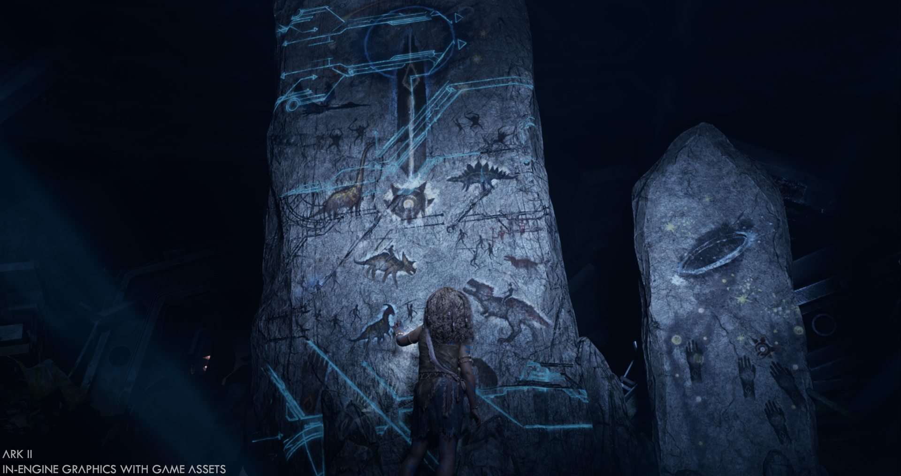
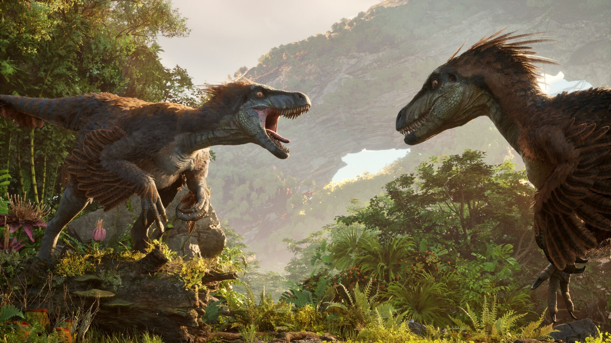

Введение в ARK 2
ARK 2 — это продолжение популярной игры ARK: Survival Evolved, разработанное студией Studio Wildcard. Игра будет использовать Unreal Engine 5 для улучшенной графики и реалистичного игрового процесса. В главных ролях — Вин Дизель, который исполнил роль Сантьяго, главного героя.
Сюжет ARK 2
Сюжет ARK 2 разворачивается после событий Genesis: Часть 2 на новой планете, где игроки должны выжить, используя древние и современные технологии. В центре сюжета — борьба Сантьяго за свою дочь, Мику.
Геймплей ARK 2
Как и в оригинальной игре, ARK 2 будет предоставлять игрокам уникальную возможность приручать динозавров и строить базы. Однако, в продолжении серии добавлены новые механики и элементы, такие как улучшенные физические и боевые системы.
Дата выхода
Релиз ARK 2 запланирован на конец 2024 года, и игра будет доступна на ПК и консолях Xbox Series X|S.